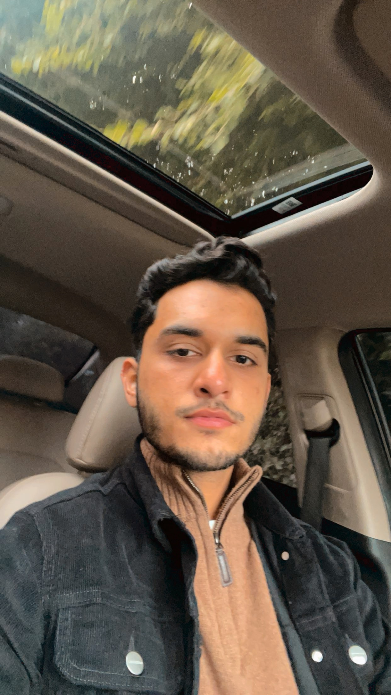

Safi Ahmed Ali

Summary:
Honesty, dedication, results and no matter what giving my all to the work im doing.
Education:
- Completed my Senior High School in 2020.
- Currently on going 4th year of MBBS/MD degree at CMC Larkana.
Work Experience:
Internee at Jinnah Hospital Karachi
June 1st 2024 - June 15th 2024
- Interacted with patients, taking history etc.
- Practised passing IV injections, Canula.
- Passed NG tube.
- Observed Surgery Procedures.
Skills:
Medical skills:
- Can pass I.V canula, injections, Drip to patients.
- Can take patient's vitals.
- Knows emergency resuscitation.
Other skills:
- Learning Programming, coding, web development.
- Can use machines which require sensitive moments.
Awards and Certifications:
- 3rd Best essay on Eidhi awarded by cameroonian consulate.
- Research certification on vitiligo treatment.
Other: